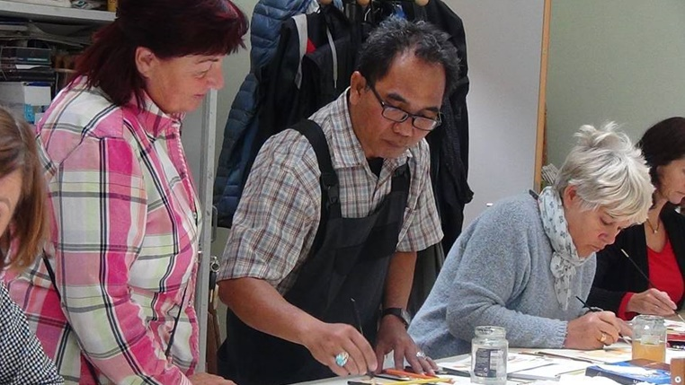
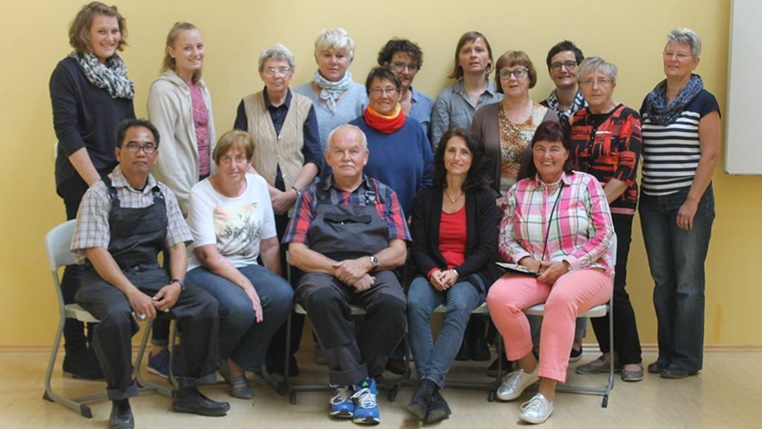
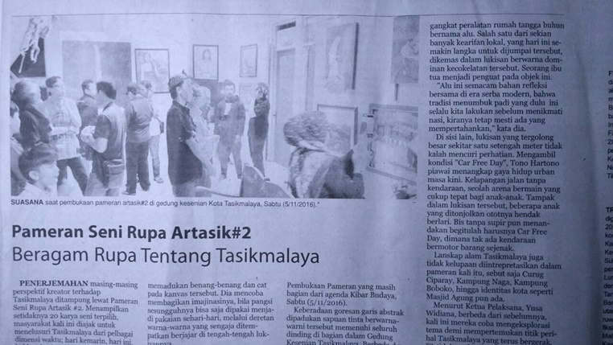
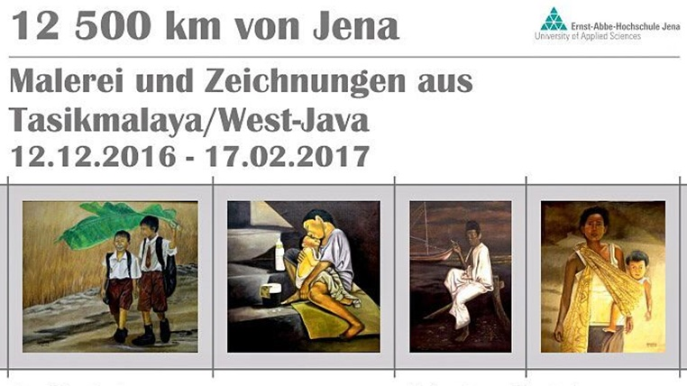
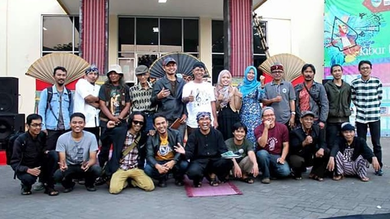
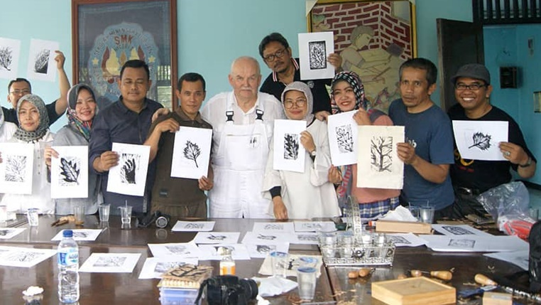

Kegiatan - Kegiatan
1 / 10

Berbagi Teknik Melukis di Gera,Germany (16/12/17)
2 / 10

Bersama Teman-Teman di Gera (16/12/17)
3 / 10

Harian Kabar Priangan (12/11/16) Megulas Pameran Seni Rupa Artasik #2
4 / 10

30 Lukisan dipamerkan di Universitas Jena, Jerman Pada 12/12/2016 - 17/02/17
5 / 10

Gelar Pameran Seni Rupa Kibar Budaya (14/01/2017)
6 / 10

Management Pinggiran Tasikmalaya Painting Community menyelenggarakan Workshop Guru Seni Budaya di SMKN 3 Tasikmalaya (31/01/19
7 / 10

Mengajar Gambar di SMP Jerman
8 / 10

Mengajar ditempat Les Gambar di Jerman
9 / 10

Kegiatan Melukis Bersama
10 / 10

Foto Bersama Bpk. Ir. H. Dede Sudrajat, MP